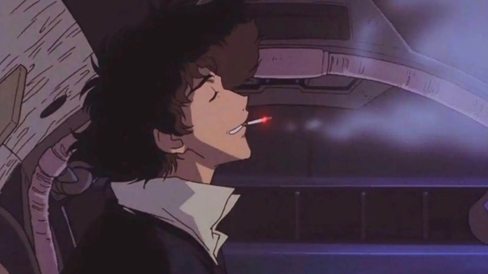
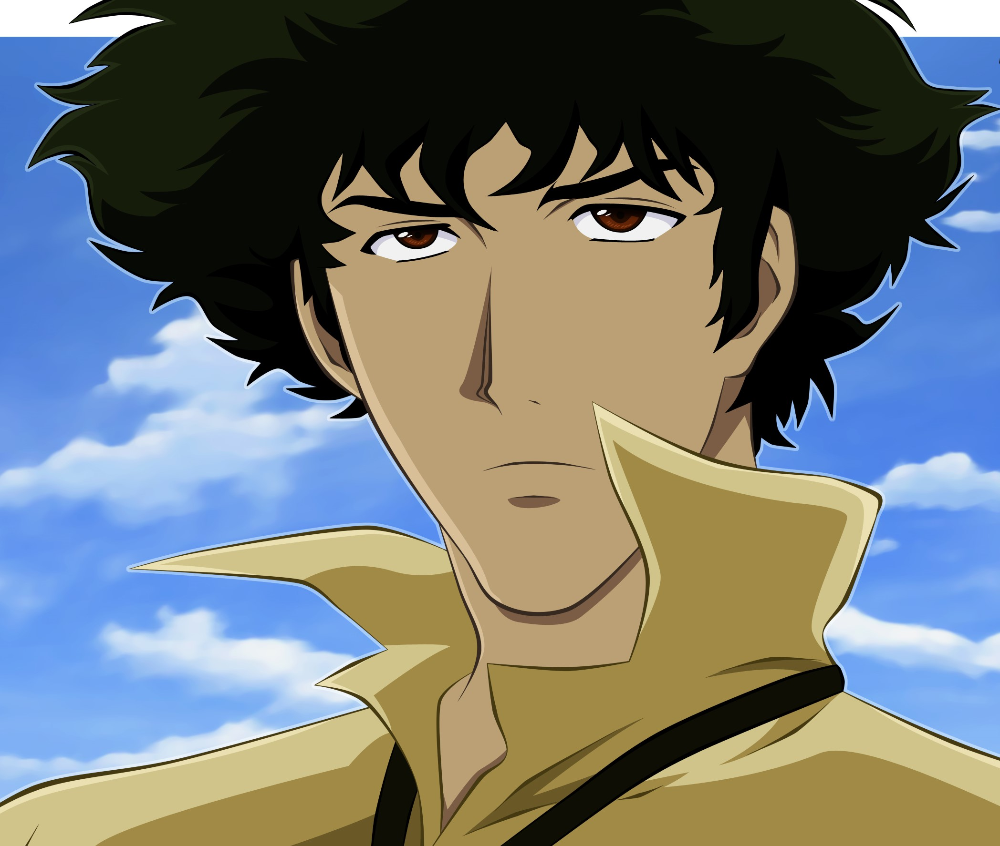
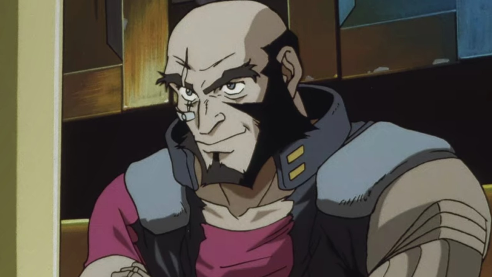
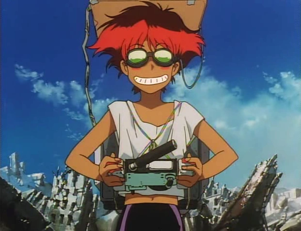
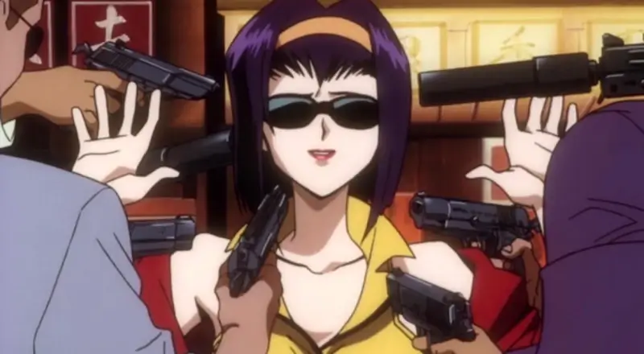

This landing page is about my favourite anime Cowboy Bebop.
Everyone should watch this anime!
So cool, much vibe.

Starting by:

Spike Spiegel
Spike has a history of violent activity, seen through flashbacks and dialogue with the Red Dragon Syndicate.
He is often depicted with a cavalier attitude,
but occasionally shows signs of compassion when dealing with strangers.

Jet Black
A 36-year-old former cop from Ganymede (a Jovian satellite) and acts as Spike's foil during the series. Physically, Jet is very tall with a muscular build. He wears a beard with no mustache, and is completely bald save for the back of his head.

Edward
An elite hacker prodigy from Earth. "Radical Edward" is a very strange and extremely intelligent teenage girl of around thirteen years of age.

Fay Valentine
She is often seen with a cigarette and in a revealing outfit complete with bright
yellow hot pants and a matching, revealing top
(and, on occasion, a bikini). She sports violet hair and green eyes.
"Everything has a beginning and an end.
Life is just a cycle of starts and stops.
There are ends we don't desire, but they're inevitable, we have to face them.
It's what being human is all about."
- Jet Black
Get more information about anime
And go into this beautiful world of bounty hunters! See ya space cowboy.